This brief sub-analysis explores patterns in fatal road transport accidents involving child pedestrians and cyclists in Australia from 1989 to present. These road users are considered vulnerable due to their physical fragility and limited situational awareness.
The notebook focuses on identifying: - Long-term trends in child pedestrian and cyclist fatalities - Temporal and gender-based differences - Key risk periods by month, day, and time
Findings from this analysis can support targeted interventions to improve road safety for children and non-motorized road users.
Key Findings
Data Cleaning
Data cleaning pipeline is imported from the data_cleaning.py file. The pipeline includes functions to load the data, clean it, and filter it for the analysis.
Code
"""This notebook is fully self-contained and does not depend on the main EDA notebook.The dataset is loaded and cleaned using `full_clean_pipeline()` from `scripts/data_cleaning.py`, which:- Loads raw data from /data/Crash_Data.csv- Cleans missing values and harmonizes variables- Drops incomplete or irrelevant columns- Returns a tidy, ready-to-analyze DataFrame"""# Set the directory for the scriptimport syssys.path.append("../scripts") # Importing necessary librariesimport pandas as pd import numpy as npimport matplotlib.pyplot as pltimport seaborn as snsfrom IPython.display import displayfrom data_cleaning import full_clean_pipelinedf = full_clean_pipeline()# Create variable for the earliest and latest years in the dataset to be dynamically displayed in plot titleslatest_year = df['Year'].max()earliest_year = df['Year'].min()print(f"The dataset contains data from {earliest_year} to {latest_year}.")
1.1 Child Pedestrian and Cyclist Fatalities by Year
Code
# Fatalities for Children Under 16 by Road User Type # Group data by Year and Road User, counting all Crash ID occurrencesfatalities_by_year_user_children = child_ped_cyclist_fatalities.groupby(['Year', 'Road User'])['Crash ID'].count().reset_index(name='Fatalities') # Changed variable name# Plotting raw numbers of Fatalities for Children Under 16sns.set_style('whitegrid')plt.figure(figsize=(12, 6))sns.lineplot(x='Year', y='Fatalities', data=fatalities_by_year_user_children, hue='Road User', marker="o")plt.title(f'Pedestrian and Cyclist Fatalities of Children Under 16 ({earliest_year} - {latest_year})')plt.xlabel('Year')plt.ylabel('Number of Fatalities')plt.grid(True)sns.despine()plt.tight_layout()plt.show()
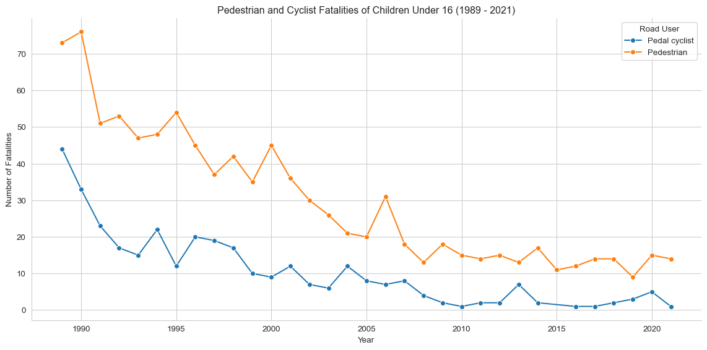
The above line graph shows the raw number of cyclist and pedestrian fatalities involving children under 16 from 1989. The graph shows a steady decline in fatalities for both groups, with a plateau from the mid 2000s.
Code
# Group data by Year and State, counting all Crash ID occurrencesfatalities_by_year_state = child_ped_cyclist_fatalities.groupby(['Year', 'State'])['Crash ID'].count().reset_index(name='Fatalities')# Create a pivot table for the stacked bar chartpivot_fatalities_state = fatalities_by_year_state.pivot(index='Year', columns='State', values='Fatalities').fillna(0)# Sort the index to make sure years are in orderpivot_fatalities_state = pivot_fatalities_state.sort_index()# Plotting raw numbers of pedal cyclist and pedestrian fatalities for children under 16 by state (stacked bar chart)sns.set_style('whitegrid')pivot_fatalities_state.plot(kind='bar', stacked=True, figsize=(12, 6), cmap='tab20')plt.title(f'Cyclist and Pedestrian Fatalities of Children Under 16 by State ({earliest_year} - {latest_year})')plt.xlabel('Year')plt.ylabel('Number of Fatalities')plt.legend(title='State')plt.xticks(rotation=45)plt.tight_layout()plt.show()
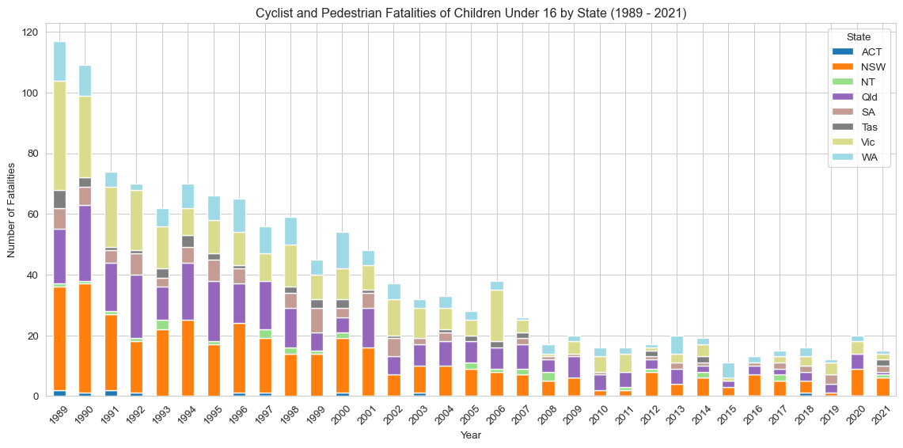
This stacked bar chart shows the number of fatal pedestrian and cyclist incidents involving children under 16 across Australian states from 1989 to 2023. States are separated by colour, and the number of fatalities is represented by the height of the bars. The graph shows that New South Wales has the highest number of fatalities, followed by Victoria and Queensland. The other states have significantly lower numbers of fatalities.
1.2 Child Pedestrian and Cyclist Fatalities by Month
Code
# Use the pre-defined DataFrame directlymonth_counts_df = child_ped_cyclist_fatalities.copy() # Use copy only if adding column modifies original view, safer practicemonth_counts_df['Month Name'] = month_counts_df['Month'].map(month_names)# Calculate the number of accidents by monthmonth_counts = month_counts_df['Month Name'].value_counts().reset_index()month_counts.columns = ['Month', 'Fatalities']month_counts['Month'] = pd.Categorical(month_counts['Month'], categories=month_order, ordered=True) # Uses global month_ordermonth_counts = month_counts.sort_values('Month')# Plotting a bar plot for monthly breakdownplt.figure(figsize=(12, 6))sns.barplot(x='Month', y='Fatalities', data=month_counts, dodge=False)plt.title(f'Child Cyclist and Pedestrian Fatalities by Month ({earliest_year} - {latest_year})')plt.xlabel('Month')plt.ylabel('Number of Fatalities')plt.xticks(rotation=45)plt.tight_layout()plt.show()
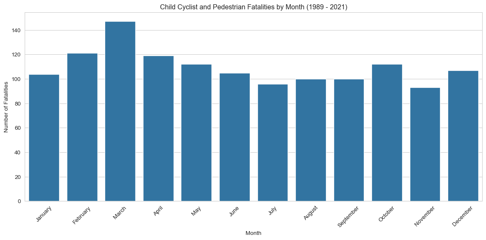
1.3 Child Pedestrian and Cyclist Fatalities by Day of Week and Time of Day
Code
# Operate on a sliceheatmap_df = child_ped_cyclist_fatalities[['Time', 'Dayweek']]# Dropping rows with missing values in 'Time' - creates a new DataFrameheatmap_df = heatmap_df.dropna(subset=['Time']).copy() # Add copy here after dropna to avoid SettingWithCopyWarning# Extracting the hour from the time fieldheatmap_df['Hour'] = heatmap_df['Time'].str.split(':').str[0].astype(int)# Creating a pivot table to convert the data into wide formatpivot_table = pd.pivot_table(heatmap_df, values='Time', index=['Hour'], columns=['Dayweek'], aggfunc='count', fill_value=0)# Reindex for consistency (optional but good practice)pivot_table = pivot_table.reindex(range(24), fill_value=0)pivot_table = pivot_table.reindex(columns=day_order, fill_value=0)# Plotting a heatmapplt.figure(figsize=(12, 8))sns.heatmap(pivot_table, # Use reindexed table annot=True, cmap='RdYlGn_r', # Take a colour palette from https://loading.io/color/feature/RdYlGn-9/ and use _r to flip it so that red is higher and green is lower fmt='g')plt.title(f'Child Cyclist and Pedestrian Fatalities Count by Day of Week and Hour of Day ({earliest_year} - {latest_year})')plt.xlabel('Day of the Week')plt.ylabel('Hour of Day')plt.show()
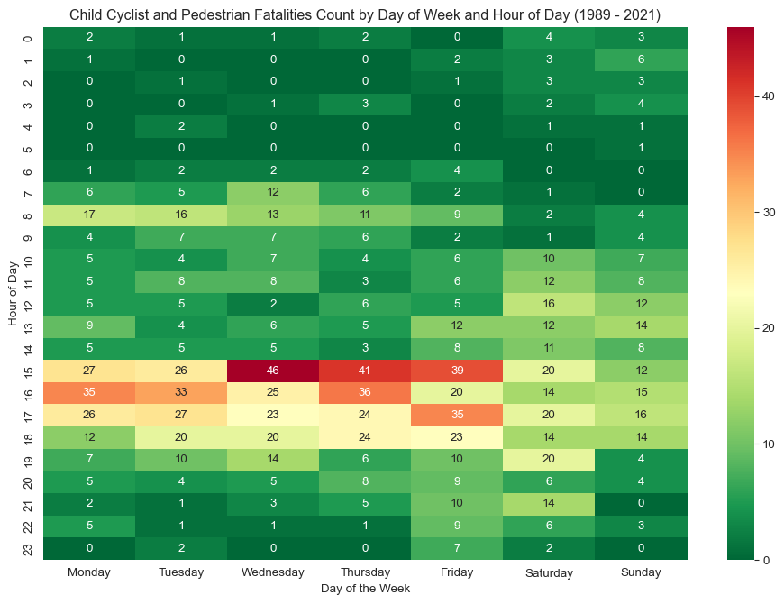
This heatmap shows when child pedestrian and cyclist fatalities most commonly occur, broken down by hour of day and day of the week. Redder areas indicate higher fatality counts, highlighting dangerous time windows. The heatmap shows that most fatalities occur on weekdays, with a peak around 8-9am and 3-5pm, likely due to school drop-off and pick-up times. The heatmap also shows that fatalities on weekends are spread out more evenly throughout the day, with a peak around 3pm on Saturdays.
1.4 Child Pedestrian and Cyclist Fatalities by Gender
Code
ped_cyclist_gender_fatalities = child_ped_cyclist_fatalities.dropna(subset=['Gender'])# Group data by Gender, counting all Crash ID occurrencesped_cyclist_gender_count = ped_cyclist_gender_fatalities.groupby('Gender')['Crash ID'].count().reset_index(name='Fatalities')# Plotting a bar plot for Gender breakdown of combined pedestrian and cyclist fatalitiesplt.figure(figsize=(8, 6))sns.barplot(x='Gender', y='Fatalities', data=ped_cyclist_gender_count, hue='Gender', palette=custom_palette, dodge=False, legend=False)plt.title(f'Child Cyclist and Pedestrian Fatalities by Gender ({earliest_year} - {latest_year})') plt.xlabel('Gender')plt.ylabel('Number of Fatalities')plt.tight_layout()plt.show()# Calculate and print the percentageped_cyclist_gender_count['Percentage'] = (ped_cyclist_gender_count['Fatalities'] / ped_cyclist_gender_count['Fatalities'].sum()) *100print(ped_cyclist_gender_count[['Gender', 'Percentage']])
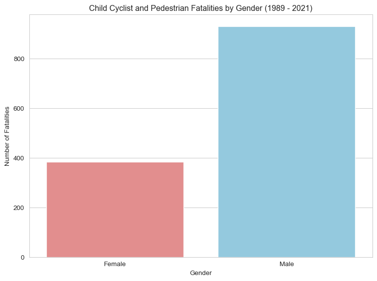
Gender Percentage
0 Female 29.179331
1 Male 70.820669
2. Child Pedestrian Fatalities
2.1 Child Pedestiran Fatalities by Year
Code
fatalities_by_year_state = pedestrian_children.groupby(['Year', 'State'])['Crash ID'].count().reset_index(name='Fatalities')# Create a DataFrame with all years in the desired range (DYNAMIC)all_years = pd.DataFrame({'Year': np.arange(earliest_year, latest_year +1)})# Merge this with the fatalities_by_year_state DataFrame to include all yearsall_years_fatalities = pd.merge(all_years, fatalities_by_year_state, on='Year', how='left')# Fill NaN States potentially introduced by left merge before pivoting (though less likely here)# Fill NaN Fatalities with 0all_years_fatalities['Fatalities'] = all_years_fatalities['Fatalities'].fillna(0)# Ensure State column doesn't have NaNs if a year had 0 fatalities across all states (edge case)# all_years_fatalities['State'] = all_years_fatalities['State'].fillna('Unknown') # Or handle differently if needed# Create a pivot table for the stacked bar chart# Need to handle potential multiple states per year after merge if not grouping firstpivot_fatalities_state = pd.pivot_table(all_years_fatalities, index='Year', columns='State', values='Fatalities', fill_value=0)# Sort the index to make sure years are in orderpivot_fatalities_state = pivot_fatalities_state.sort_index()# Plotting raw numbers of pedestrian fatalities for children under 16 by state (stacked bar chart)sns.set_style('whitegrid')pivot_fatalities_state.plot(kind='bar', stacked=True, figsize=(12, 6), cmap='tab20')plt.title(f'Pedestrian Fatalities of Children Under 16 by State ({earliest_year} - {latest_year})')plt.xlabel('Year')plt.ylabel('Number of Fatalities')plt.legend(title='State')plt.xticks(rotation=45)plt.tight_layout()plt.show()
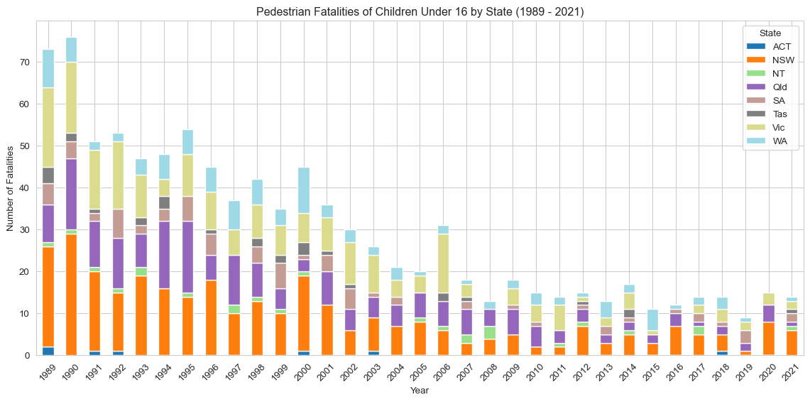
2.2 Child Pedestrian Fatalities by Month
Code
# Use the pre-defined DataFrame for pedestrian children directlymonth_counts_ped_df = pedestrian_children.copy() # Use copy only if adding column modifies original viewmonth_counts_ped_df['Month Name'] = month_counts_ped_df['Month'].map(month_names) # Uses global month_names# Calculate the number of fatalities by monthmonth_counts_pedestrian = month_counts_ped_df['Month Name'].value_counts().reset_index()month_counts_pedestrian.columns = ['Month', 'Fatalities']# Sort the months in order using the existing month_order listmonth_counts_pedestrian['Month'] = pd.Categorical(month_counts_pedestrian['Month'], categories=month_order, ordered=True) # Uses global month_ordermonth_counts_pedestrian = month_counts_pedestrian.sort_values('Month')# Plotting a bar plot for monthly breakdown of pedestrian fatalitiesplt.figure(figsize=(12, 6))sns.barplot(x='Month', y='Fatalities', data=month_counts_pedestrian, dodge=False, legend=False)plt.title(f'Child Pedestrian Fatalities by Month ({earliest_year} - {latest_year})')plt.xlabel('Month')plt.ylabel('Number of Fatalities')plt.xticks(rotation=45)plt.tight_layout()plt.show()
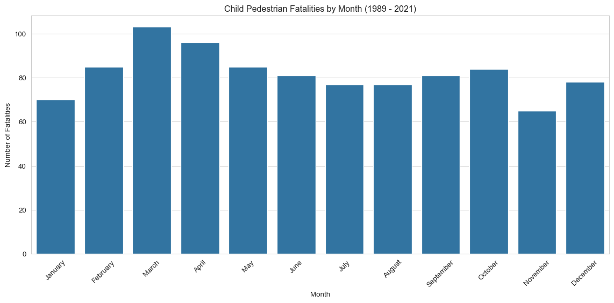
2.3 Child Pesestrian Fatalities by Day of Week and Time of Day
Code
# Create a slice of the pedestrian_children DataFrame with relevant columnsheatmap_df_pedestrian = pedestrian_children[['Time', 'Dayweek']]# Dropping rows with missing values in 'Time' - creates a new DataFrameheatmap_df_pedestrian = heatmap_df_pedestrian.dropna(subset=['Time']).copy() # Add copy here# Extracting the hour from the time fieldheatmap_df_pedestrian['Hour'] = heatmap_df_pedestrian['Time'].str.split(':').str[0].astype(int)# Creating a pivot table for pedestrian fatalitiespivot_table_pedestrian = pd.pivot_table(heatmap_df_pedestrian, values='Time', index=['Hour'], columns=['Dayweek'], aggfunc='count', fill_value=0)# Reindex the pivot table to include all hours from 0 to 23, filling missing hours with 0pivot_table_pedestrian = pivot_table_pedestrian.reindex(range(24), fill_value=0)# Use the existing day_order list to ensure correct column orderpivot_table_pedestrian = pivot_table_pedestrian.reindex(columns=day_order, fill_value=0)# Plotting a heatmap for pedestrian fatalitiesplt.figure(figsize=(12, 8))sns.heatmap(pivot_table_pedestrian, annot=True, cmap='RdYlGn_r', # Using the same reversed Red-Yellow-Green colormap fmt='g') # Format annotation as general numberplt.title(f'Child Pedestrian Fatalities Count by Day of Week and Hour of Day ({earliest_year} - {latest_year})')plt.xlabel('Day of the Week')plt.ylabel('Hour of Day')plt.show()
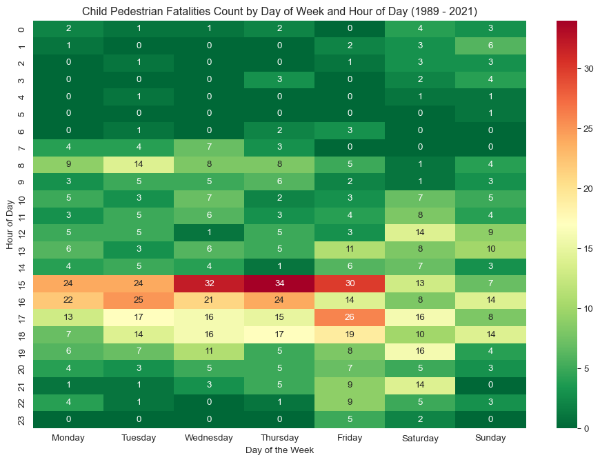
2.4 Child Pedestrian Fatalities by Gender
Code
pedestrian_gender_fatalities = pedestrian_children.dropna(subset=['Gender'])# Group data by Gender, counting all Crash ID occurrencespedestrian_gender_count = pedestrian_gender_fatalities.groupby('Gender')['Crash ID'].count().reset_index(name='Fatalities')# Plotting a bar plot for Gender breakdown of pedestrian fatalitiesplt.figure(figsize=(8, 6))sns.barplot(x='Gender', y='Fatalities', data=pedestrian_gender_count, hue='Gender', palette=custom_palette, dodge=False, legend=False)plt.title(f'Child Pedestrian Fatalities by Gender ({earliest_year} - {latest_year})') plt.xlabel('Gender')plt.ylabel('Number of Fatalities')plt.tight_layout()plt.show()# Calculate and print the percentagepedestrian_gender_count['Percentage'] = (pedestrian_gender_count['Fatalities'] / pedestrian_gender_count['Fatalities'].sum()) *100print(pedestrian_gender_count[['Gender', 'Percentage']])
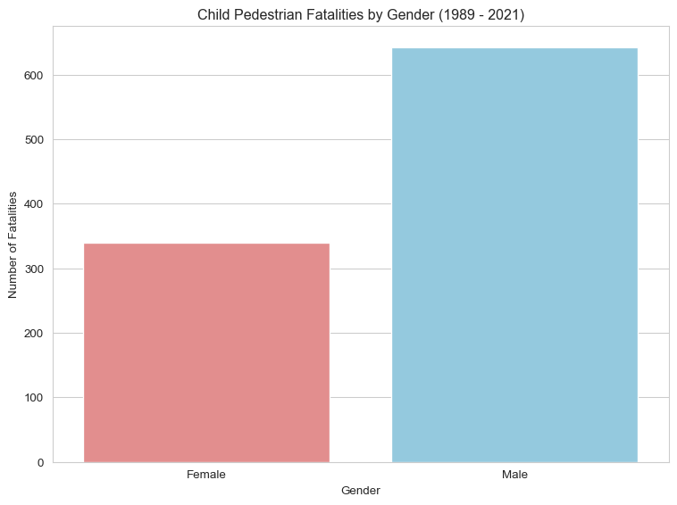
Gender Percentage
0 Female 34.521385
1 Male 65.478615
3. Child Cyclist Fatalities
3.1 Child Cyclist Fatalities by Year
Code
fatalities_by_year_state = cyclist_children.groupby(['Year', 'State'])['Crash ID'].count().reset_index(name='Fatalities')# Create a DataFrame with all years in the desired range (DYNAMIC)all_years = pd.DataFrame({'Year': np.arange(earliest_year, latest_year +1)})# Merge this with the fatalities_by_year_state DataFrame to include all yearsall_years_fatalities = pd.merge(all_years, fatalities_by_year_state, on='Year', how='left')all_years_fatalities['Fatalities'] = all_years_fatalities['Fatalities'].fillna(0)# Create a pivot table for the stacked bar chartpivot_fatalities_state = pd.pivot_table(all_years_fatalities, index='Year', columns='State', values='Fatalities', fill_value=0)# Sort the index to make sure years are in orderpivot_fatalities_state = pivot_fatalities_state.sort_index()sns.set_style('whitegrid')pivot_fatalities_state.plot(kind='bar', stacked=True, figsize=(12, 6), cmap='tab20')plt.title(f'Cyclist Fatalities of Children Under 16 by State ({earliest_year} - {latest_year})')plt.xlabel('Year')plt.ylabel('Number of Fatalities')plt.legend(title='State')plt.xticks(rotation=45)plt.tight_layout()plt.show()
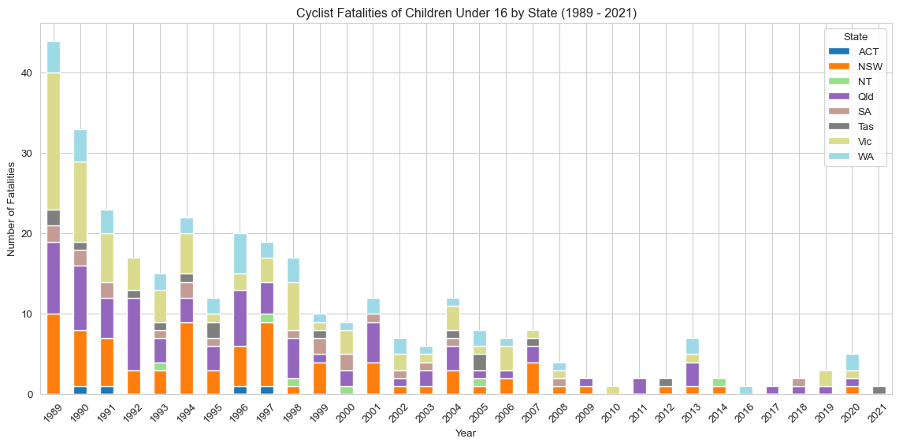
The above stacked bar chart shows the number of fatal cyclist incidents involving children under 16 across Australian states from 1989 to 2023. The graph shows a steady decline in fatalities for all states, with New South Wales having the highest number of fatalities, followed by Victoria and Queensland.
3.2 Child Cyclist Fatalities by Month
Code
month_counts_cyc_df = cyclist_children.copy() # Use copy only if adding column modifies original view# Map the month numbers to month namesmonth_counts_cyc_df['Month Name'] = month_counts_cyc_df['Month'].map(month_names)# Calculate the number of accidents by monthmonth_counts = month_counts_cyc_df['Month Name'].value_counts().reset_index()month_counts.columns = ['Month', 'Fatalities']month_counts['Month'] = pd.Categorical(month_counts['Month'], categories=month_order, ordered=True)month_counts = month_counts.sort_values('Month')# Plotting a bar plot for monthly breakdownplt.figure(figsize=(12, 6))sns.barplot(x='Month', y='Fatalities', data=month_counts, dodge=False, legend=False)plt.title(f'Child Cyclist Fatalities by Month ({earliest_year} - {latest_year})') plt.xlabel('Month')plt.ylabel('Number of Fatalities')plt.xticks(rotation=45)plt.tight_layout()plt.show()
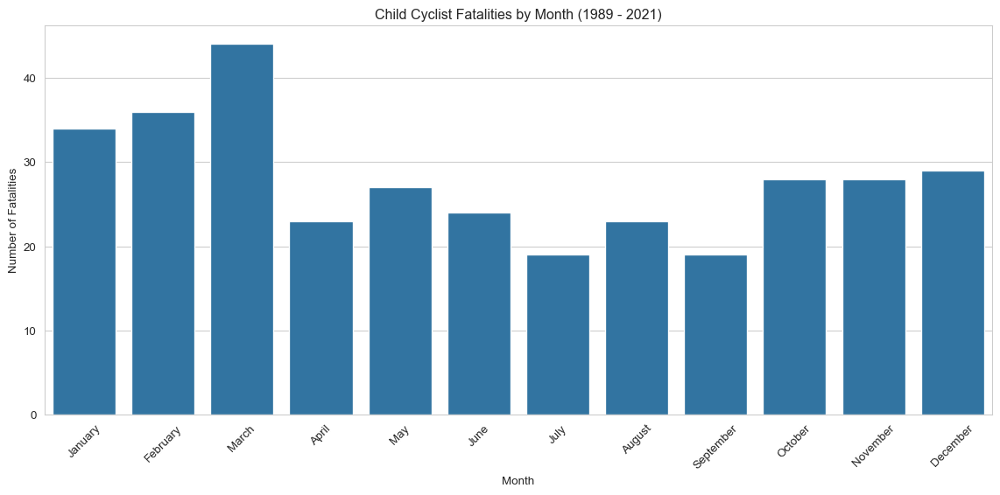
3.3 Child Cyclist Fatalities by Day of Week and Time of Day
Code
heatmap_df_cyc = cyclist_children[['Time', 'Dayweek']]# Dropping rows with missing values in 'Time'heatmap_df_cyc = heatmap_df_cyc.dropna(subset=['Time']).copy() # Add copy here# Extracting the hour from the time fieldheatmap_df_cyc['Hour'] = heatmap_df_cyc['Time'].str.split(':').str[0].astype(int)# Creating a pivot table to convert the data into wide formatpivot_table_cyc = pd.pivot_table(heatmap_df_cyc, values='Time', index=['Hour'], columns=['Dayweek'], aggfunc='count', fill_value=0)# Reindex for consistencypivot_table_cyc = pivot_table_cyc.reindex(range(24), fill_value=0)pivot_table_cyc = pivot_table_cyc.reindex(columns=day_order, fill_value=0)# Plotting a heatmapplt.figure(figsize=(12, 8))sns.heatmap(pivot_table_cyc, # Use reindexed table annot=True, cmap='RdYlGn_r', # Take a colour palette from https://loading.io/color/feature/RdYlGn-9/ and use _r to flip it so that red is higher and green is lower fmt='g')plt.title(f'Child Cyclist Fatalities Count by Day of Week and Hour of Day ({earliest_year} - {latest_year})') plt.xlabel('Day of the Week')plt.ylabel('Hour of Day')plt.show()
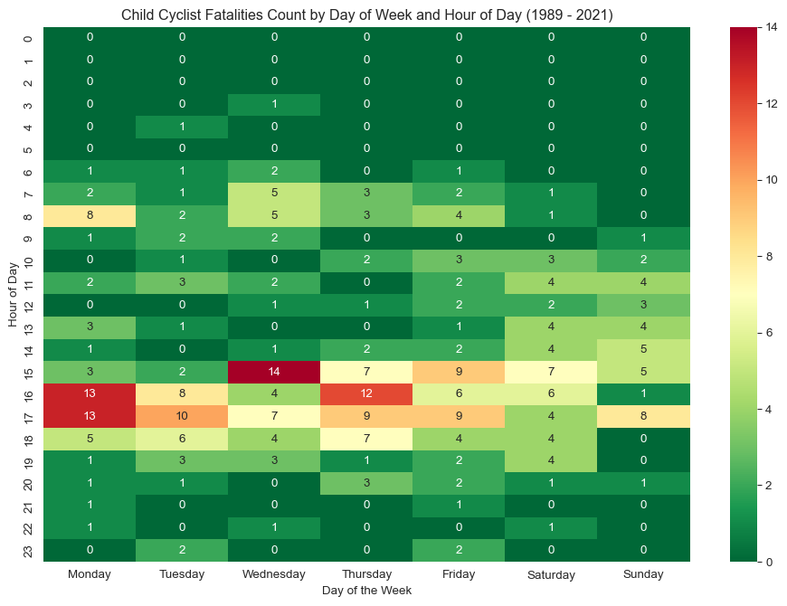
3.4 Child Cyclist Fatalities by Gender
Code
# Filter for valid entries in 'Gender'gender_fatalities_cyc = cyclist_children.dropna(subset=['Gender']) # Changed variable name slightly for clarity# Group data by Gender, counting all Crash ID occurrencesgender_count_cyc = gender_fatalities_cyc.groupby('Gender')['Crash ID'].count().reset_index(name='Fatalities')# Plotting a bar plot for Gender breakdownplt.figure(figsize=(8, 6))sns.barplot(x='Gender', y='Fatalities', data=gender_count_cyc, hue='Gender', palette=custom_palette, dodge=False, legend=False)plt.title(f'Child Cyclist Fatalities by Gender ({earliest_year} - {latest_year})') plt.xlabel('Gender')plt.ylabel('Number of Fatalities')plt.tight_layout()plt.show()# Calculate and print the percentage for consistencygender_count_cyc['Percentage'] = (gender_count_cyc['Fatalities'] / gender_count_cyc['Fatalities'].sum()) *100print(gender_count_cyc[['Gender', 'Percentage']])
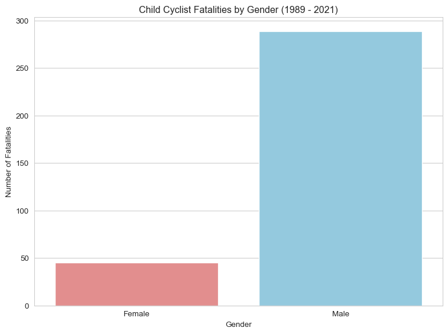
Gender Percentage
0 Female 13.473054
1 Male 86.526946
Conclusion
This analysis highlights key vulnerabilities in child pedestrian and cyclist safety:
Pedestrian fatalities have declined more significantly than cyclist fatalities.
Males are consistently more represented in both groups.
Fatalities often occur in the late afternoon and early evening, especially on Fridays.
Seasonal variation is evident, with higher rates in warmer months.
Future work could explore how school zones, urban density, and infrastructure changes impact these trends.